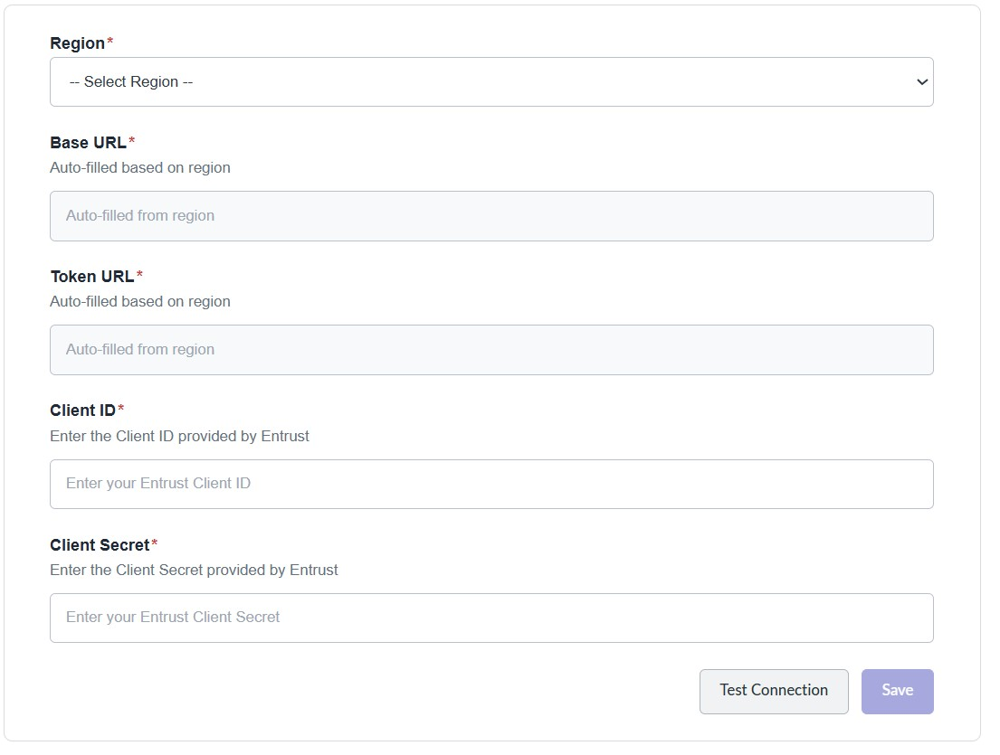
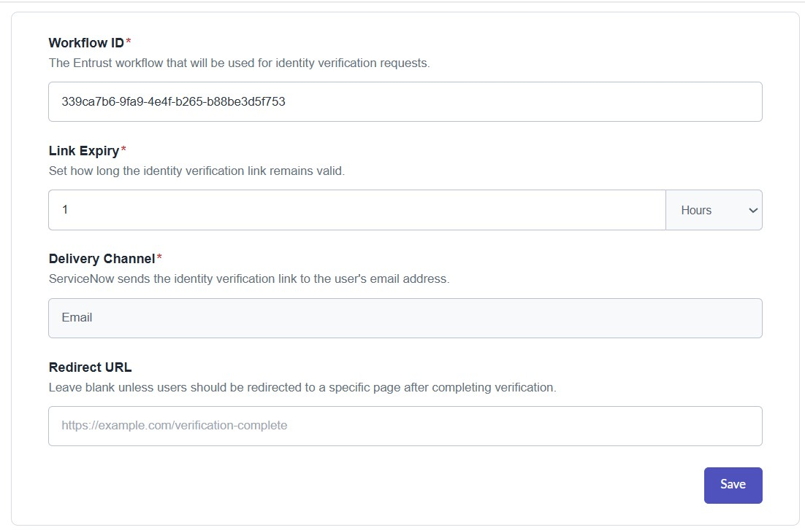
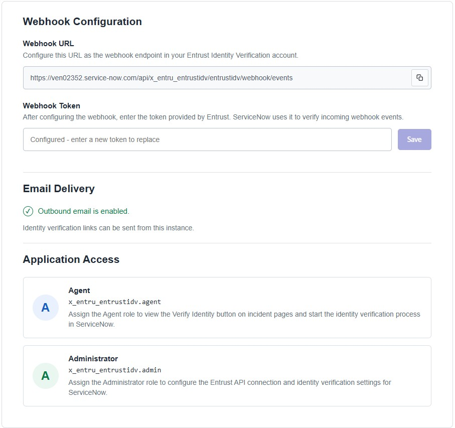

1. Give users access
Assign these roles in ServiceNow under the user record:
| User | Role | What the role allows |
|---|---|---|
| Administrators | x_entru_entrustidv.admin | Configure the connection and verification settings. |
| Agents | x_entru_entrustidv.agent | See Verify Identity on incident pages and start verification. |
2. Configure the Entrust connection
Open API Connection
Open the Entrust Identity Verification admin setup page and select API Connection.
Choose your region
Select the region used by your Entrust account. ServiceNow fills in the Base URL and Token URL.
Enter your credentials
Enter the Client ID and Client Secret from Entrust. Select Test Connection, then select Save after the test succeeds.
3. Set verification settings
- Open Verification Settings.
- Enter the Entrust Workflow ID that should run for identity checks.
- Set how long the verification link should work. The maximum is 48 hours.
- Leave Delivery Channel set to Email.
- Leave Redirect URL blank, or enter an HTTP or HTTPS page where users should go after verification.
- Select Save.
4. Configure the webhook
- Open Setup Information and copy the Webhook URL.
- In your Entrust Identity Verification account, add this URL as the webhook endpoint.
- Copy the webhook token provided by Entrust.
- Paste the token into ServiceNow and select Save.
ServiceNow uses the token to check that webhook events came from Entrust.
5. Turn on email
ServiceNow sends verification links by email. Make sure outbound email is enabled:
System Properties > Email Properties > Outbound Email Configuration
Screenshots for reference



6. Test the setup
Open an incident as an agent and select Verify Identity. Confirm that the user receives the email and that the verification status updates on the record.